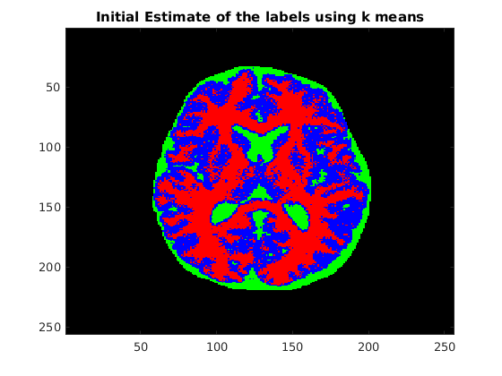
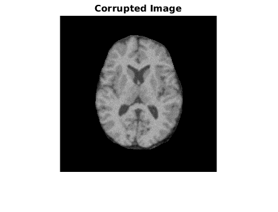
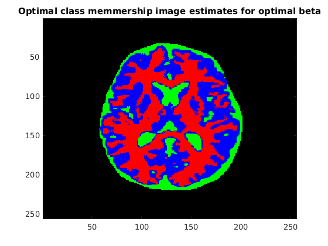
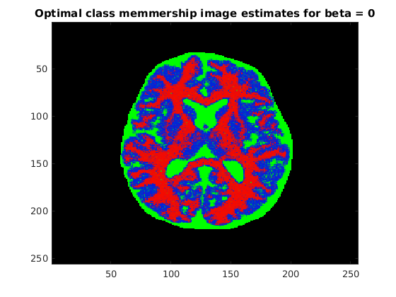
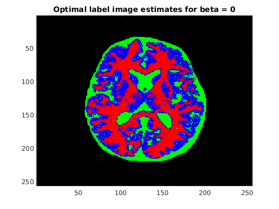

CS 736: Medical Image Processing
Question 2 Assignment 4 (Image Segmentation) Praveen Agrawal 12D020030 Aditya Kumar 120050046
Contents
Loading the points
load('../Data/assignmentSegmentBrainGmmEmMrf.mat');
Y = imageData;
Mask = imageMask;
k = 3;
maxIteration = 200;
betaOpt = 2;
Part (a)
fprintf('The optimal value of beta is %f\n', betaOpt);
The optimal value of beta is 2.000000
Segmentation using image clustering
segmentedImage = zeros(size(Y, 1), size(Y, 2), k, 2);
segmentedLabel = zeros(size(Y, 1), size(Y, 2), k, 2);
iterArr = zeros(maxIteration, 3);
iterationValues = zeros(2, 1);
for i = 1 : 2
initialization
Initialization using kmeans Reason - Kmeans intialization is fast. It provides with k clusters
var = zeros(k,1);
varPrev = zeros(k, 1);
mew = zeros(k, 1);
mewPrev = zeros(k, 1);
maskedImage = Y(logical(Mask));
[maskedLabels, mew] = kmeans(maskedImage, k); % K means is fast , good for initialization
Part (b) image initialization using kmeans clustering
X = zeros(size(Y));
X(logical(Mask)) = maskedLabels;
if (i == 1)
figure;
tempImage = zeros(size(X, 1), size(X, 2), k);
for j = 1 : k
tempImage(:, :, j) = ((X == j) * 255);
end
imagesc(tempImage);
title('Initial Estimate of the labels using k means');
end
 Part(c) means and variance is intilialized using kmeans clustering
computing the variance from k means
for j = 1:k XPart = maskedImage(maskedLabels == j); var(j) = sumsqr(XPart - mew(j))/length(XPart); end if i == 1 beta = betaOpt; disp('Initial Means - '); disp(mew); disp('Initial Sigma - '); disp(sqrt(var)); else beta = 0; end epsilon = 0.00001; iteration = 0; % EM algorithm while sum(abs(mew - mewPrev)) > epsilon && iteration < maxIteration iteration = iteration + 1; mewPrev = mew; varPrev = var; % MAP estimation of the labels [oldEstimate] = MAPValue(X, Mask, Y, k, mew, var, beta); [estimate, X] = MAPEstimation(X, Mask, Y, k, mew, var, beta); if i == 1 iterArr(iteration, 1) = iteration; iterArr(iteration, 2) = oldEstimate; iterArr(iteration, 3) = estimate; end % E step [gamma] = membership(X, Mask, Y, k, mew, var, beta); % M step [mew, var] = MStep(Y, Mask, gamma, k); end iterationValues(i) = iteration; segmentedImage(:, :, :, i) = gamma; for j = 1 : k segmentedLabel(:, :, j, i) = ((X == j) * 255); end
Initial Means -
0.6288
0.2701
0.5054
Initial Sigma -
0.0367
0.0775
0.0442
end
Part (d) Iteration values for MAP estimate
fprintf('Iteration\tBefore ICM\tAfter ICM\n'); for i = 1 : iterationValues(1) fprintf('%d\t\t%f\t%f\n', i, iterArr(i, 2), iterArr(i, 3)); end
Iteration Before ICM After ICM 1 25551.894452 32440.728524 2 31246.981019 32727.151065 3 31377.389323 32789.811959 4 31444.591345 32812.868379 5 31477.616588 32823.787331 6 31497.392853 32826.728561 7 31511.395431 32823.031524 8 31520.165522 32825.642709 9 31516.297730 32824.920966 10 31515.611479 32824.895419
Part (e) Plots
figure; imshow(Y .* Mask); title('Corrupted Image'); figure; imagesc(segmentedImage(:, :, :, 1)); title('Optimal class memmership image estimates for optimal beta'); figure; imagesc(segmentedLabel(:, :, :, 1)); title('Optimal label image estimates for optimal beta'); figure; imagesc(segmentedImage(:, :, :, 2)); title('Optimal class memmership image estimates for beta = 0'); figure; imagesc(segmentedLabel(:, :, :, 2)); title('Optimal label image estimates for beta = 0');   